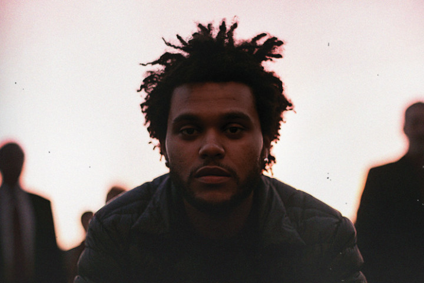
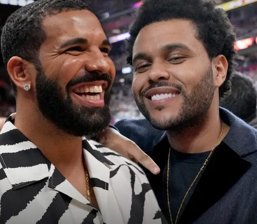

Noticias
"Sumérgete en el mundo musical de The Weeknd con las últimas noticias y actualizaciones, donde cada melodía es una historia que te lleva a un viaje emocional incomparable."
"Matar a The Weeknd"el artista canadiense cambió su nombre en redes.
.jpg)
"En un giro sorprendente, The Weeknd se despide de su icónico nombre artístico. El talentoso artista detrás del éxito número uno "Blinding Lights" ha tomado la valiente decisión de deshacerse de su famoso seudónimo y reclamar su nombre de nacimiento en las redes sociales: Abel Tesfaye
The Weeknd es oficialmente el artista más popular del mundo.
.jpg)
Es oficial: The Weeknd es el artista más popular del mundo. El cantautor, cuyo verdadero nombre es Abel Makkonen Tesfaye, es estadísticamente el músico más popular del planeta, según Guinness World Records (GWR). “Nadie más se acerca”, dijo la organización en un comunicado a principios de esta semana.
The Weeknd alcanza el puesto número uno de la lista de álbumes del Reino Unido
El cantautor, cuyo verdadero nombre es Abel Makkonen Tesfaye, es estadísticamente el músico más popular del planeta, según Guinness World Records (GWR). “Nadie más se acerca”, dijo la organización en un comunicado a principios de esta semana. El cantante canadiense, de 33 años, estableció dos nuevos títulos Guinness World Record. Actualmente tiene la mayor cantidad de oyentes mensuales en Spotify, con 111,4 millones hasta el 20 de marzo. También se convirtió en el primer artista en alcanzar los 100 millones de oyentes mensuales.
Canción falsa de Drake y The Weeknd hecha con IA se hizo viral
La canción Heart On My Sleeve (Corazón en la manga), simula un intercambio de versos -la mayoría haciendo referencia a la también cantante y actriz Selena Gómez, ex pareja de The Weeknd- entre las dos estrellas.Según su creador, quien se idenifica como @ghostwriter (escritor fantasma), la canción fue creada por un software al que se entrenó usando las voces de estos dos artistas.«Apenas estamos empezando», escribió debajo del video de la canción en YouTube.
Travis Scott, Bad Bunny y The Weeknd se unieron en “K-Pop”
Travis Scott, Bad Bunny y The Weeknd se unieron en “K-pop”, una colaboración que pinta en convertirse en un tema de verano. El tema llega antes de la salida del esperado disco Utopia de Scott. “K-pop” fue mitificado por los fanáticos desde que se adelantó por primera vez a principios de este año. Encuentra a Travis Scott en el apogeo de sus poderes como intérprete, compositor, productor y colaborador. Igualmente, el título no tiene que ver con el estilo de la canción..